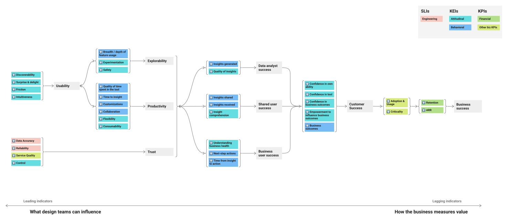
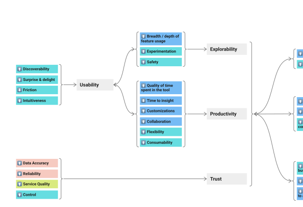

Design success metrics map
Defined the framework and built the map
The Data and Insights design team needed a way to tie its work to outcomes it couldn’t move directly. The map runs left to right, from the leading indicators design can influence through analyst and business-user success to adoption, retention, and ARR; the team adopted it as a 32-metric framework and used it to show where Adobe Analytics was losing ground to newer SMB tools, and which of those losses design could do something about.

